är projektledare. Hon är en metodisk person och har en förmåga att hålla koll på alla detaljer. Detta arbete är avgörande för att säkerställa att filmprojektet når sina mål. Hon är en pålitlig och effektiv lagspelare som alltid ser till att projekten flyter smidigt.
är kreatör och har illustrerat tonaliteten och karaktärerna utifrån filmen. Hon har en unik förmåga att skapa illustrationer som berör och engagerar. Hennes arbete har gett webbplatsen och de tryckta artefakterna inspirerade av filmen en extra dimension av skönhet och kreativitet.
har huvudansvaret för webbplatsen och är kunnig inom kodning och webbutveckling. Hon är den som bygger själva hemsidan och ser till att allt fungerar smidigt. Kate är en tekniskt kunnig person som har erfarenhet av att arbeta med HTML, CSS och JavaScript. Hennes arbete är avgörande för att filmens webbplats ska vara användarvänlig och fungera optimalt.